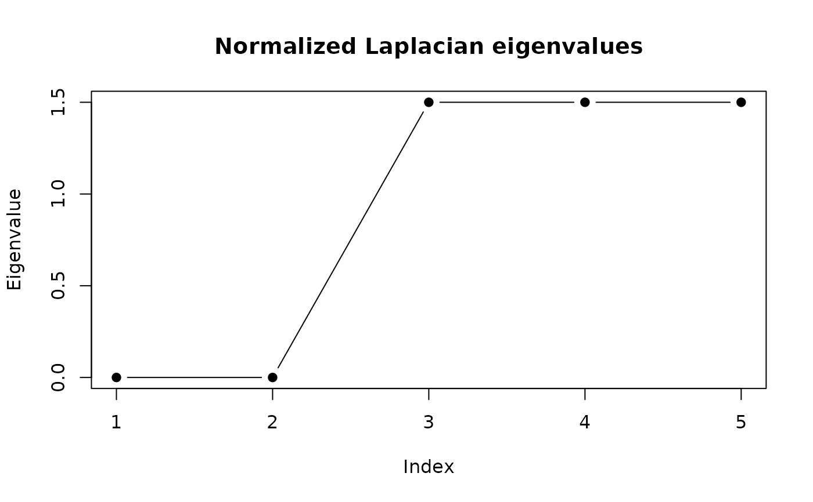

eigengap() plots the smallest eigenvalues of the symmetric normalized
Laplacian of S. A pronounced gap after the k-th eigenvalue suggests k
well-separated clusters.
Arguments
- sim
An
outrank_simobject fromoutrank_similarity().- k_max
Number of smallest eigenvalues to show.
Value
Invisibly, a data frame with the eigenvalue index, the
eigenvalue, and the gap to the next one.
Examples
m <- matrix(0.1, 6, 6) + diag(0.9, 6)
m[1:3, 1:3] <- 0.9; m[4:6, 4:6] <- 0.9; diag(m) <- 1
dimnames(m) <- list(1:6, 1:6)
crit <- criterion(m, "similarity", indifference = 0.3, similarity = 0.95)
tr <- as_traces(
data.frame(case = as.character(1:6), act = "x",
ts = as.POSIXct("2020-01-01")),
"case", "act", "ts"
)
eigengap(outrank_similarity(tr, crit), k_max = 5)
